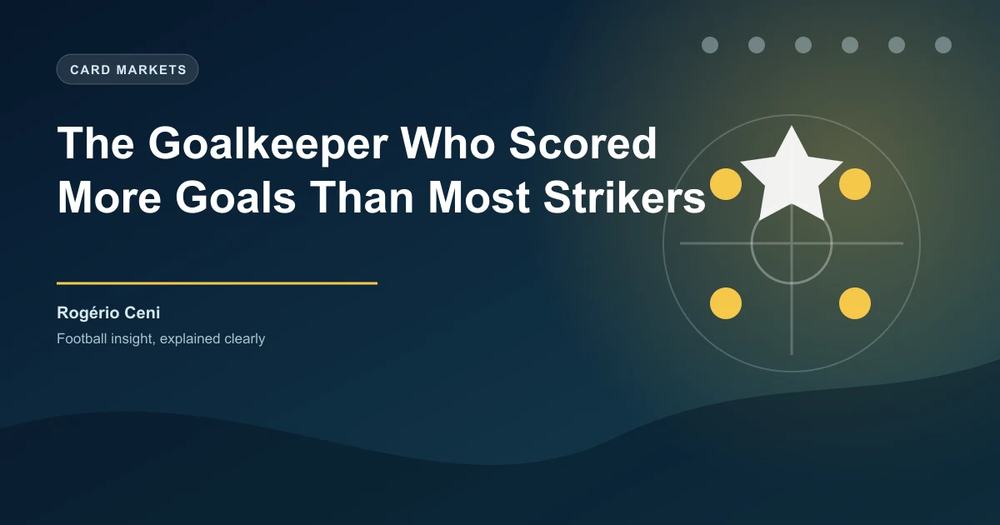

Imagine being a goalkeeper and outscoring Steven Gerrard, Ryan Giggs, and Didier Drogba. Not across your career as a whole, but solely when it comes to Premier League goals � and you never even played in England. That is the reality of Rog�rio Ceni, the Brazilian shot-stopper who rewrote what a goalkeeper can be.
Ceni scored 131 goals across his senior career for S�o Paulo FC and the Brazilian national team. The Guinness World Record for most goals by a goalkeeper belongs to him, and it is not even close. He is the only goalkeeper in football history to reach triple digits. To put that in perspective, 131 goals puts him ahead of all-time Premier League icons like Gerrard (120), Giggs (109), and Drogba (104).
Key Stat: Rog�rio Ceni scored 131 goals in his career (129 per IFFHS standards). That is more than three Premier League legends managed in the entire English top flight.
How does a goalkeeper score 131 goals? The answer is dead-ball mastery. All but one of Ceni's goals came from free kicks and penalties. He struck the ball with a curl and precision that most outfield players would envy. His technique was so consistent that he became S�o Paulo's designated free-kick and penalty taker � a responsibility he carried for over a decade.
The single goal from open play makes the story even more remarkable. While the vast majority of his tally came from set pieces, that one open-play strike proves he was not afraid to push forward when the moment demanded it. At 1.88 metres tall, Ceni also had the physique to arrive in the box during stoppage time, but his true weapon was always his right foot.
Goal Breakdown: 131 total goals � 65 free kicks, 65 penalties, 1 open play. Almost perfectly balanced between free kicks and penalties across 22 seasons.
Ceni sits alone at the top of the scoring goalkeeper mountain. The gap between him and second place is wider than most casual fans realise. Here is how the top five stack up:
| Goalkeeper | Country | Career Goals | Notable |
|---|---|---|---|
| Rog�rio Ceni | Brazil | 131 | Only GK with 100+ goals |
| Jos� Luis Chilavert | Paraguay | 67 | Scored a hat-trick of penalties |
| Dimitar Ivankov | Bulgaria | 42 | 22 seasons in Bulgaria & Turkey |
| Jorge Campos | Mexico | 40 | Also played as a striker |
| Hans-J�rg Butt | Germany | 31 | Scored in UCL for 3 clubs |
Chilavert, the Paraguayan legend, is the closest challenger with 67 goals � barely half of Ceni's tally. Chilavert's 8 international goals are the most by any goalkeeper at national team level, and he once scored a hat-trick of penalties in a single match for V�lez Sarsfield. But even that extraordinary feat does not touch Ceni's overall record.
Ceni spent his entire club career at S�o Paulo FC, making 1,237 appearances over 22 years. He was not just a goalkeeper who occasionally scored � he was the club captain, the heartbeat of the team, and the man who led S�o Paulo to the greatest period in their modern history.
Under his captaincy, S�o Paulo won the Copa Libertadores twice, in 2005 and 2006. They also lifted three Brazilian S�rie A titles and the Intercontinental Cup in 2005, where Ceni kept a clean sheet against Liverpool to claim the world club crown. His leadership was as vital as his goals. He organised defences, marshalled set pieces, and inspired comebacks � often providing the equaliser or winner himself.
Ceni captained S�o Paulo to 2 Libertadores titles, 3 Brazilian league titles, and 1 Intercontinental Cup. He was the only goalkeeper to captain a side to Libertadores glory twice.
Ceni's record has stood since his retirement in 2015, and no active goalkeeper looks likely to threaten it. Modern keepers are more involved in build-up play than ever, but very few take dead balls. The role of the sweeper-keeper has evolved, but the scoring goalkeeper remains a dying breed.
Alisson Becker, Ederson, and Manuel Neuer have all contributed assists and the occasional ambitious strike, but none have taken over set-piece duties. The tactical specialisation of modern football means managers are reluctant to let goalkeepers near free kicks, and the pressure on keepers to stay in position during set pieces outweighs the potential reward.
What makes Ceni's achievement so enduring is not just the number � it is the context. He scored more than outfield legends from the most restrictive position on the pitch. His record is not a quirk; it is a testament to skill, nerve, and longevity.
Ceni's story is a reminder that football is full of edge cases that defy conventional thinking. For bettors, the lesson is clear: when you find a market everyone else ignores, the value can be enormous. Just as Ceni exploited dead-ball situations that most goalkeepers left untouched, sharp bettors find value in niches like goalkeeper goalscorer markets or long-range shot specials.
Betting on a goalkeeper to score is a long shot in most modern leagues, but when a set-piece specialist keeper plays against a weak defensive wall or a team with a poor record at defending free kicks, the odds can be worth a small stake. Ceni himself scored at a rate of roughly six goals per season � better than many midfielders. If you had backed him every time he lined up a free kick, the cumulative returns would have been significant.
Betting Takeaway: Look for goalkeeper goalscorer markets when a team has a designated free-kick taker between the posts. Check recent form on dead balls and the opposition's defensive record from range.
For now, Ceni's record stands as one of football's most unbreakable. No goalkeeper has scored even half his total. In an era of increasing tactical rigidity, nobody has come close. Rog�rio Ceni was a one-off � a goalkeeper who scored more than strikers, captained his boyhood club to world glory, and left a record that will likely never be beaten.
Check our free daily football predictions for expert analysis on matches across Europe's top leagues.
Generate optimized accumulator combinations from today's AI-powered predictions. Set your target odds and get instant ticket suggestions.
Free Ticket Builder →